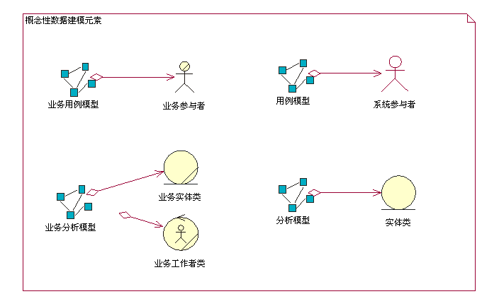
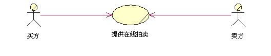
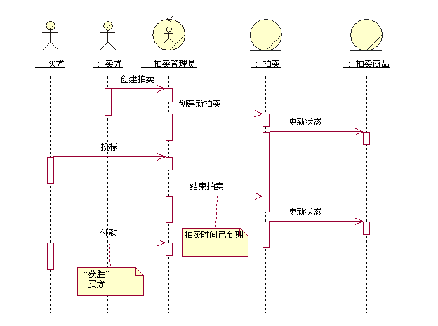
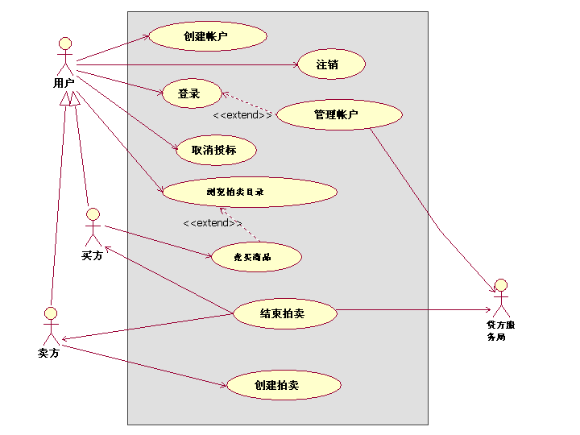

| 概念：概念性数据建模 |
 |
|
简介如 [NBG01] 中所定义的，概念性数据建模代表了系统中持久数据和持久数据存储的设计开发初始阶段。在许多情况下，系统的持久数据通过关系数据库管理系统（RDBMS）进行管理。 根据业务模型和系统需求得出的在概念层面确定的业务和系统实体将通过用例分析、用例设计和数据库设计任务，发展成详细的物理表设计，这些表设计将在 RDBMS 中实施。请注意，本概念文档中讨论的概念性数据模型并不是一个单独的工作产品。 而是由包含在现有业务建模、需求以及分析和设计规程等工作产品中的信息的组合视图构成，这些信息与数据模型的开发相关。 数据模型通常通过以下三个一般阶段逐渐发展：
与数据库设计相关的任务贯穿于整个软件开发生命周期，并且初始的数据库设计任务可能开始于先启阶段期间。对于使用业务建模来描述应用程序的业务环境的项目，数据库设计可以在概念级别开始，识别业务用例模型中的业务参与者和业务用例，以及业务分析模型中的业务工作者和业务实体。 对于不使用业务建模的项目，数据库设计可以在概念级别开始识别用例模型中的系统参与者和系统用例，以及识别来自用例实现的分析模型中的分析类。 下图显示了概念性数据模型元素的集合，这些元素驻留在业务模型、需求模型和分析模型中。  以下各部分描述了业务模型、用例模型和分析模型的元素，这些元素可以用来为系统中的持久数据定义初始的概念性数据模型。 概念性数据建模元素业务模型业务用例模型 业务用例模型由业务参与者和业务用例构成。业务用例代表用于为要开发的系统定义环境的关键业务流程。 业务参与者代表通过业务用例与业务进行交互的关键外部实体。 下图显示一个非常简单的网上拍卖应用程序业务用例模型  作为对于系统空间问题起重要作用的实体，业务参与者是概念性数据模型的候选实体。 在上例中，买方和卖方业务参与者是网上拍卖应用程序必须为它们存储信息的候选实体。 业务分析模型 业务分析模型包含为业务工作者和业务实体进行建模的类，其中业务工作者和业务实体是根据对业务用例中的工作流程的分析而确定的。 业务工作者代表为了运转该工作流程而执行所需操作的工作者。 业务实体是业务工作者在该工作流程期间使用或生成的“事物”。在许多情况下，业务实体代表系统必须持久存储的信息类型。 下图显示一个示例时序图，该图描绘了一个用于管理拍卖、名为“提供网上拍卖”的业务用例场景中的业务工作者和业务实体。  在这个简化的示例中，“拍卖管理员”对象代表一个“业务工作者”角色，该角色将可能由网上拍卖管理系统本身担当。 “拍卖”和“拍卖商品”对象是由“拍卖管理员”工作者使用或生成的业务实体，而“拍卖管理员”工作者担当“卖方”和“买方”业务参与者的代理。从数据库设计的角度，“拍卖”和“拍卖商品”业务实体是概念性数据模型的候选实体。 需求和分析模型对于不执行业务建模的项目，需求（系统用例）和分析模型包含可用来开发初始概念性数据模型的模型元素。 对于使用业务建模的项目，在业务分析模型中识别的业务实体和关系将在分析模型中优化和详述为实体类。 系统用例模型 系统用例模型包含系统参与者和系统用例，它们定义用户与系统之间的主要交互。 系统用例定义系统的功能需求。 从概念性数据建模角度来说，系统参与者代表系统以外的实体，系统可能需要为这些实体存储持久信息。 在以下情况下这是很重要的，即：系统参与者是一个为所开发系统提供数据和／或从所开发系统接收数据的外部系统。 系统参与者可以源自业务用例模型中的业务参与者，以及业务分析模型中的业务工作者。 下图描绘了用于网上拍卖系统的业务用例模型。 在此模型中，“买方”和“卖方”业务参与者现在源自一般的用户业务参与者。 其中添加了一个名为“信用服务机构”的新的系统参与者，以反映通过外部实体处理支付的需要。 这个新的系统参与者是概念性数据模型的又一个候选实体。  分析模型 分析模型包含在系统用例的用例实现中识别的分析类。从概念性数据建模的角度，主要引人注意的分析类的类型是实体分析类。 如指南：分析类中所定义，实体分析类代表由系统管理且必须以持久方式存储的信息。实体分析类和它们的关系组成了应用程序的初始数据模型的基础。 分析模型中的概念实体分析类可以优化和详述成设计模型中的逻辑持久设计类。 这些设计类代表数据模型中的候选表。 类的属性是表的候选列，同时也代表它们的候选关键字。 请参阅指南：正向设计关系数据库，以获取关于如何将设计模型中的元素映射到数据模型元素的描述。 |
© Copyright IBM Corp. 1987, 2006. All Rights Reserved. |